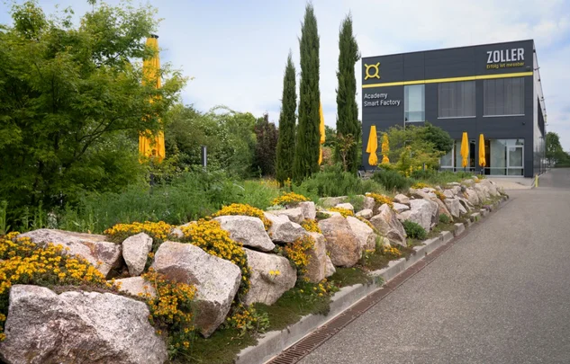
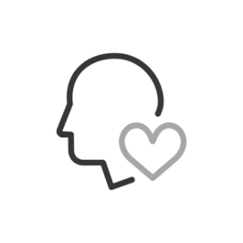
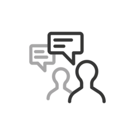
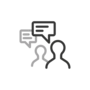
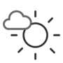
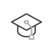
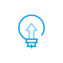
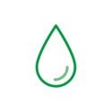
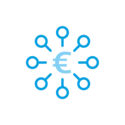
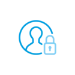

Helene Zoller Garden
A 500-square-meter garden was created for the ZOLLER team to relax in, as well as for bees, butterflies, and other insects.
Learn more


Sustainability plays a central role in ZOLLER’s corporate philosophy. We are not only committed to economic success, but also take responsibility for the environment and society. Our entire portfolio—comprising precision measuring machines for setting, measuring, and inspecting cutting tools, as well as software, interfaces, cloud services, and solutions for automating tooling processes—contributes to the conservation of resources. We are committed to social responsibility and provide fair working conditions within our company.
Integrating sustainable practices into our business processes is of crucial importance to ZOLLER. We are aware that our activities have an effect on the environment, and therefore rely on resource-conserving technologies and energy-efficient production methods. By using environmentally friendly materials and optimizing our logistics processes, we actively contribute to reducing our ecological footprint. In addition, we foster a corporate culture that places sustainability at the midpoint. Our employees are trained and encouraged to make sustainable decisions and to contribute innovative ideas for improving our environmental performance. We believe that every individual can contribute to making our company fit for the future. We view the 17 Sustainable Development Goals from the United Nations’ 2030 Agenda as the guiding principles for our own sustainable actions.
ZOLLER also takes social responsibility seriously. We support local communities and advocate for fair working conditions. By upholding ethical standards throughout our supply chain, we ensure that our partner companies also operate sustainably. Overall, for ZOLLER, sustainability is not just a trend, but a long-term goal. We are convinced that acting responsibly not only helps protect our environment but also strengthens our customers’ trust and enhances our competitiveness. Together with our partners and customers, we are working to shape a sustainable future—for our company and for future generations.

A 500-square-meter garden was created for the ZOLLER team to relax in, as well as for bees, butterflies, and other insects.

We use electricity exclusively generated from renewable energy sources. Our in-house photovoltaic system helps us achieve this.

Our technologies help manufacturing operations use their material resources, machines, and tools optimally. This reduces missing parts and increases process efficiency.
ZOLLER is an innovative company that stands out not only for its technological excellence but also for its strong commitment to sustainability and diversity. We place great importance on creating a work environment where diversity is seen as a strength.
With employees representing 24 different nationalities, ZOLLER’s headquarters in Pleidelsheim fosters a culture of mutual respect and intercultural exchange. This diversity contributes significantly to creativity, innovation, and problem-solving skills by bringing together different perspectives. Through targeted initiatives and an open corporate culture, ZOLLER uses the symbol of social responsibility and sustainable growth—both environmentally and socially. In doing so, the company demonstrates that sustainable development can go hand in hand with a diverse workforce to jointly shape forward-looking solutions.
Our international workforce is proof that diversity at ZOLLER Pleidelsheim is not just a goal, but a living reality—a strength that drives us forward every day.

Fewer CO2e
emissions by 2030
As of 2025: 6,695.74 metric tons of CO2e
(2024 baseline: 8,804.24 metric tons of CO2e)

A-tier suppliers should
be based in the region by 2030
As of 2025: 82% of A-tier suppliers are based in the region
(2024 baseline: 70%)

Our packaging should
be recyclable by 2030
Target for the end of 2025: 52% recyclable packaging
(2024 baseline: 40%)

Support social projects
through 2030
As of June 2026: 1 project
(baseline for 2024: 0 projects)

Customer
Satisfaction Through 2028
1.29 (school grade) in 2025 (based on approximately 1,000 surveys)
(2024 baseline: 1.33)

Trainees/Hours per
year through 2030
Target for 2025: 6% of trainees/hours as a percentage of the total workforce
(2024 baseline: 5%)

 | Early Detection : Which topics are relevant to my company? |
 | Philosophy : What are my company’s values? |
 | Goals : What do I want to achieve, and by when? |
| Integration : How do I integrate sustainability into business processes? | |
| Education : How do I train my employees on sustainability? |
 | Culture of Dialogue: What are we communicating internally and externally about sustainability? |
| Assessment : How Effective Is My Sustainability Management? |
| Early Detection : Which topics are relevant to my company? | |
| Philosophy : What are my company’s values? | |
| Goals : What do I want to achieve, and by when? |
| Integration : How do I integrate sustainability into business processes? | |
| Education : How do I train my employees on sustainability? |
| Culture of Dialogue: What are we communicating internally and externally about sustainability? |
| Assessment : How Effective Is My Sustainability Management? |
Our activities are measurable, verifiable, and ongoing.
We view sustainability as an everyday responsibility.

In 2024, our products were delivered in reusable containers or packaging. The usage of reusable packaging (cloth bags) instead of plastic packaging was chosen. Cloth bags are more durable and highly reusable, unlike PE bubble wrap.

Thanks to digital processes in ABAS and ELO, we reduce our paper consumption every year. In 2024, consumption was reduced by 25% based on the number of employees.

Compared to Germany’s national electricity mix in 2023, we reduced our electricity consumption in 2024. We avoided 404 metric tons of CO2e emissions by using renewable electricity exclusively.

ZOLLER has service locations throughout Germany. This results in short distances, low travel times and costs, lower emissions, and, ultimately, high customer satisfaction.

We give away seed balls containing plant seeds to customers and suppliers. We've already distributed about 1,750 of them. Seed balls are a great option for creating green surfaces and increasing biodiversity.





